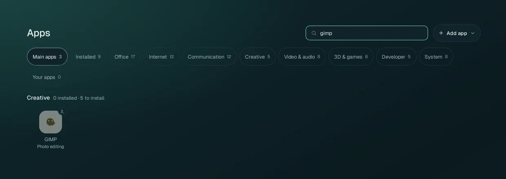
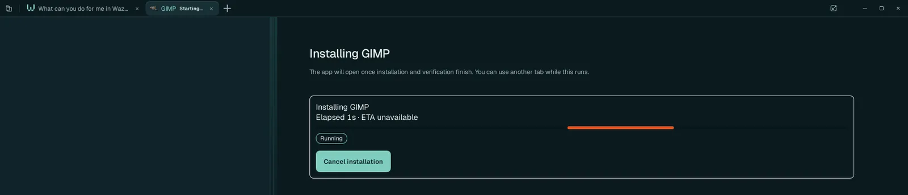
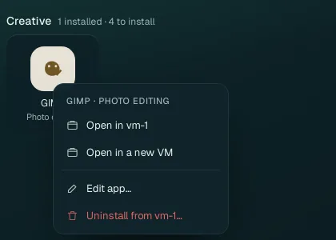
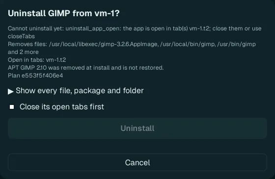

Apps and tabs
The apps live in the VM. Home › Apps lists every app you can use, about 70 of them; one click installs an app and opens it in a tab, with a Chat beside it whose agent knows that app.
The Apps page#
 1
2
3
4
5
6
1
2
3
4
5
6Search apps: type part of a name or of what it does (photo, pdf, 3d).
Add app: add an app that is not in the list (Add your own apps).
The filters: Main apps, Installed, then the categories (Office, Internet, Communication, Creative, Video & audio, 3D & games, Developer, System) and Your apps (the ones you added). Each shows how many apps it holds.
An installed app: no badge. A click opens it.
A not installed app: a download badge at its top right. A click installs it, then opens it.
Each section says how many of its apps are installed and how many are left to install.
The main apps#
| App | What it is |
|---|---|
| Chat | Ask any agent: a tab that is all Chat (Chats, agents and models). |
| Computer Control | Screen control: a Chat that can use your own computer, after your consent (Computer Control). |
| Wazza Pro | AI media creation: Wazza's image, video, audio and voice tools, with a Wazza account and its credits. |
What is in the catalog#
| Category | Apps |
|---|---|
| Office | ONLYOFFICE Documents, Spreadsheets, Presentations and PDF editor; Calendar; Sticky Notes; the web versions of Google Docs, Sheets, Slides, Forms, Keep and Calendar, and of Microsoft Word, Excel, PowerPoint, OneNote and Outlook Calendar |
| Internet | Chromium, Chromium Incognito, Brave, Opera, Proton VPN, OpenStreetMap, Google Maps, Google Drive, OneDrive, Dropbox; tools: OSM places and routes, Search |
| Communication | Gmail, Outlook, Proton Mail, Google Meet, Teams, Telegram, Signal, WhatsApp, Discord, X, Facebook, Postiz (post scheduler) |
| Creative | GIMP, Inkscape, Glaxnimate (2D animation), Motion Studio (motion graphics), Trelby (screenwriting) |
| Video & audio | VLC, Kdenlive, OBS Studio, Voice Studio (text to speech), YouTube, TikTok, Spotify; tool: Video Toolkit (FFmpeg video tools and yt-dlp) |
| 3D & games | Blender, FreeCAD, Godot, Web Game Studio, Tiled (game maps), Free Texture Packer (sprite sheets), BREP (parametric CAD), Unity Hub |
| Developer | VSCodium, Zed, Wave Terminal, Postgres; tool: Git |
| System | Files, Desktop, Settings, Calculator, KeePassXC, OTPClient (2FA codes); tools: GPU for apps, Sound card drivers |
The tools have no window: they give the VM and its agents a capability (Git, the graphics libraries, sound, web search, maps and routes, video processing). They install like apps; Git, GPU for apps, Sound card drivers, Search and OSM places and routes are installed on the first start.
Web apps (Gmail, Google Docs, Word, Teams…) open in the VM's browser as their own tab; their sign-ins are on Sign in › Web apps.
Install an app#

Find the app (filter or search).
Click it (its tooltip says Install and open). A new tab opens and shows the installation:

The tab says Installing … with the time elapsed. You can use other tabs meanwhile; Cancel installation stops it.
When it is installed and checked, the app opens in the tab, with its Chat on the left. A notification says it is done.
Installing takes from under a minute (small apps) to several minutes (Blender, ONLYOFFICE), depending on your connection. Apps install inside the VM, so they never change your computer. When an installation fails, the tab says why with Retry installation and Show log; Wazza OS already retried once by itself.
An agent can install apps for you too: ask "install Inkscape and open it", or give it a job in an app that is not installed: it installs it first.
Open and use an app#
- Click an installed app: it opens in a new tab (Tabs). Open the same app twice and you get two tabs, each with its own window and its own Chat.
- Use it as on any computer: click, type, use its menus. Its files are in the VM (Files and sharing).
- Ask its Chat to work in it for you: the agent knows the app (its skill) and uses its tools or Drive.

The app menu#

Right-click an app on the Apps page:
| Item | What it does |
|---|---|
| Open in vm-1 | Opens it in that VM (one item per VM where it is installed). |
| Open in a new VM | Makes a new VM and opens the app there (several VMs). |
| Edit app… | The app's recipe and its skill files: how it installs and starts, and what its agent knows (Edit an app's skill). |
| Uninstall from vm-1… | Removes the app from that VM (below). |
| Remove from catalog… | (an app you added) Takes your app out of the catalog, once it is uninstalled everywhere. |
Uninstall an app#
Right-click the app on the Apps page › Uninstall from vm-1….
A box shows the exact plan before anything happens:

1 2 3 4What will be removed (files, commands, packages), the tabs where the app is open, and what is not restored (here, an older GIMP that its install had replaced).
Show every file, package and folder: the complete list.
Close its open tabs first: needed when the app is open (otherwise the box says Cannot uninstall yet and Uninstall stays grey).
Uninstall removes exactly that plan; Cancel changes nothing. The card follows it (Uninstalling…) and a notification says when it is done.
Your files made with the app (in the VM's folders) stay. Apps that Wazza OS itself needs (Files, Desktop, the default tools) cannot be uninstalled.
From the command line#
$ wazza --gui app list
$ wazza --gui app status gimp
$ wazza --gui app uninstall gimp --vm vm-1 --followEvery app subcommand: The command line › Apps.